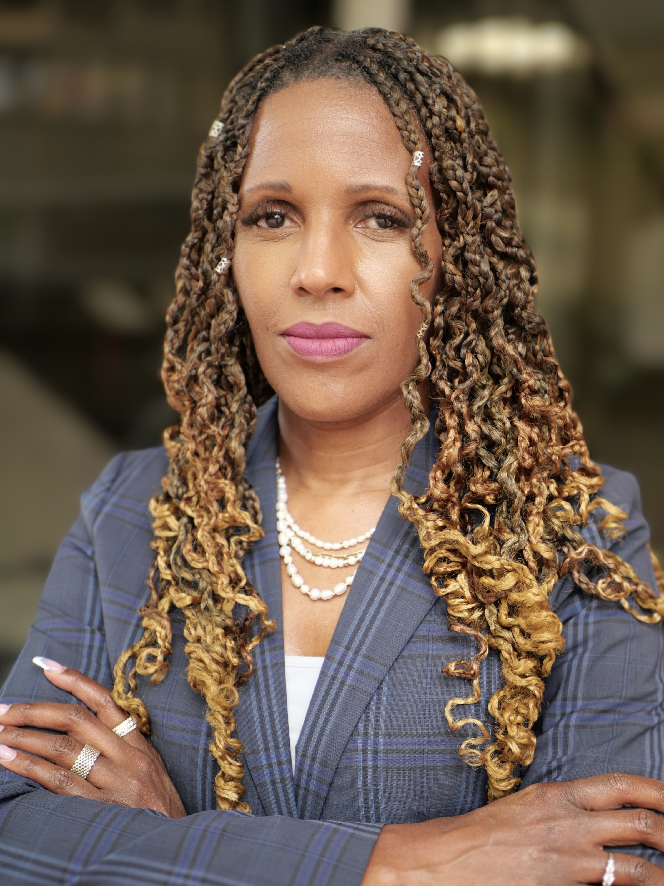

Natasha M. Dartigue
Maryland State Public Defender
Opening Remarks
About the Speaker
Natasha M. Dartigue is the Maryland State Public Defender and a nationally recognized architect of justice reform. Appointed in 2022, she is the first person of color to lead the Maryland Office of the Public Defender, building on a career that began with a clerkship for the late Judge Roger W. Brown and rose through the ranks as a trial attorney, felony trial supervisor, and Deputy District Public Defender for Baltimore City. A 1995 graduate of Howard University School of Law, she added to that record of civic leadership as a member of the Leadership Maryland Class of 2025. That depth of frontline experience now anchors her role as a national voice for the defense bar: Ms. Dartigue was elected to the Board of Directors of the National Association of Criminal Defense Lawyers (NACDL) in 2024, and in 2026 she assumed the presidency of the Maryland State Bar Association, after serving a term as president-elect.
Ms. Dartigue's leadership extends well beyond her office, reshaping how Maryland approaches systemic injustice. In 2023, she co-founded and co-chaired the Maryland Equitable Justice Collaborative (MEJC) alongside Attorney General Anthony Brown, an unprecedented alliance between prosecution and defense that produced 18 landmark recommendations to dismantle mass incarceration and reduce racial disparities in Maryland's justice system. She then translated that research into action, launching the Maryland Justice Partnership (MJP) in January 2026, a statewide implementation framework, not a study group, designed to turn MEJC's recommendations into enacted law and measurable reform. She also expanded the state's capacity to correct wrongful convictions by establishing the second Innocence Project Clinic at the University of Maryland Francis King Carey School of Law, giving Maryland public defenders innocence-work partnerships with both of the state's law schools for the first time.
A daughter of Haitian immigrants, Ms. Dartigue describes her historic appointment as one that “redefines what leadership looks like” and offers hope to children of immigrants too often overlooked. Her record of sustained excellence has been repeatedly recognized: she was named to The Daily Record's Top 100 Women in both 2018 and 2024, earning induction into its Circle of Excellence, reserved for honorees recognized multiple times for sustained achievement, and was placed on the 2024 Criminal Law Power List for driving change and impact across the field. From the courtroom to the halls of the General Assembly, Natasha Dartigue stands as a model of how a career centered on principled leadership can drive systemic change.